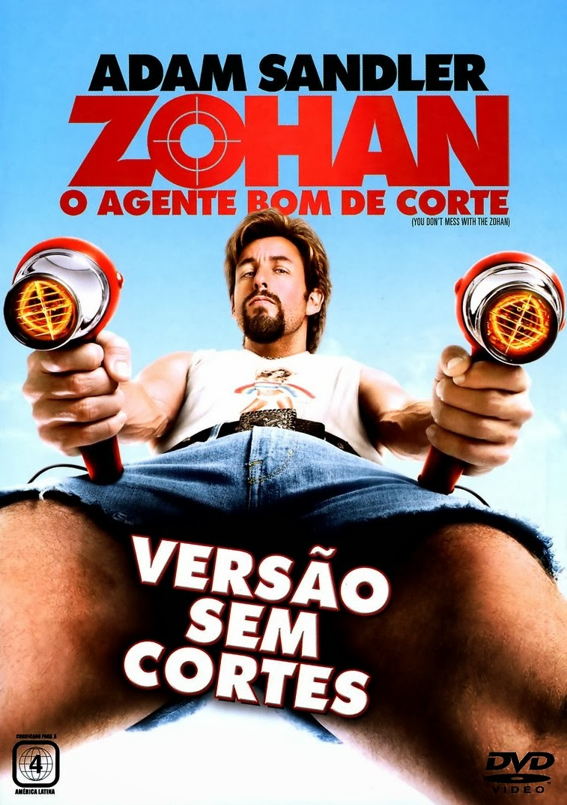

SINOPSE:
Zohan Dvir (Adam Sandler) é um agente do alto comando militar de Israel que finge sua própria morte em um ataque de seu arquinimigo,
o terrorista Fantasma (John Tururro), para realizar o sonho de sua vida: tornar-se cabeleireiro em Nova York.
Ao chegar nos Estados Unidos sua 1ª parada é no salão de seu ídolo Paul Mitchell (John Paul DeJoria),
onde assume a identidade de Scrappy Coco. Ridicularizado por seu jeito antiquado, Zohan não consegue o emprego sonhado.
Ele busca então se adaptar à vida na nova cidade, até ser descoberto por seus antigos inimigos.
Sinopse de Zohan
Avaliações de Zohan
#2 - CARROS

SINOPSE:
Relâmpago McQueen (Owen Wilson) é um carro de corridas ambicioso, que já em sua 1ª temporada na Copa Pistão torna-se um astro.
Ele sonha em se tornar o 1º estreante a vencer o campeonato, o que possibilitaria que assinasse um patrocínio com a cobiçada Dinoco.
A fama faz com que Relâmpago acredite que não precisa da ajuda de ninguém, sendo uma "equipe de um carro só".
Esta arrogância lhe custa caro na última corrida da temporada, fazendo com que seus dois pneus traseiros estourem na última volta
da corrida. O problema permite que seus dois principais adversários, o ídolo Rei (Richard Petty)
e o traiçoeiro Chicks (Michael Keaton), cruzem a linha de chegada juntamente com ele, o que faz com que uma corrida de desempate seja agendada na California.
Relâmpago é então levado para o local de corrida por Mack (John Ratzenberger), um caminhão que faz parte de sua equipe.
Ele quer chegar ao local antes de seus competidores e, por causa disto, insiste que Mack viage sem interrupções.
Mack termina dormindo em pleno trânsito, o que faz com que a caçamba se abra e Relâmpago, que também estava dormindo,
seja largado em plena estrada. Ao acordar Relâmpago tenta encontrar Mack a todo custo, mas não tem sucesso.
Em seu desespero ele chega à pequena Radiator Springs, uma cidade do interior que tem pouquíssimo movimento e que jamais ouviu
falar de Relâmpago ou até mesmo da Copa Pistão. Porém, por ter destruído a principal rua da cidade,
Relâmpago é condenado a reasfaltá-la. Obrigado a permanecer na cidade contra a sua vontade,
aos poucos ele conhece os habitantes locais e começa a se afeiçoar por eles.
Sinopse de Carros
Avaliações de Carros